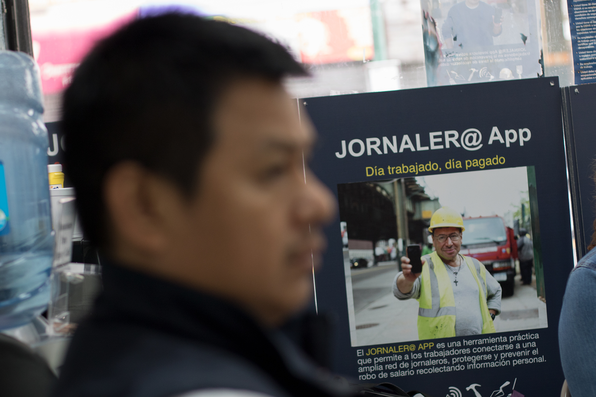

Facing wage theft, some look at the cloud
A day laborers organization work to fight wage theft through internet, but the solution will involve more than clicks on the smartphone
Por: GERARDO DEL VALLE Y JOAQUÍN TORRES
At 69th street and Roosevelt Avenue, in Queens, around thirty men stand, waiting. They gather together in groups of two’s and three’s; they don't speak much between each other. From time to time a car pass by - a pickup, a van or a large suburban- slowing down. The car’s engine serves like the referee´s whistle in a soccer game. Men realign themselves, approaching to the car slowly, When the car pulls it’s window down it´s clear that the match has started. Like a McDonald´s drive-through, you can someone to help you to move, to fix a sink, to build a wall or to weld a door, just for 100 dollars per day.
Those who end up chosen, get into the cars hoping will come back home with money in their pockets. That’s the ideal day for a daily laborer, nevertheless, the picture could change dramatically. Some, who take the risk to get on the car of a completely stranger alone in order to find job, finish their day without payment, being scammed. According to a study published by University of Illinois, UCLA and The National Employment Law Project, every week there is a wage theft of 56.4 million dollars in New York, Chicago and Los Angeles.

But for some day laborers, the aftermath is worse. Manuel Solano, 37, is living proof of what could be the worst case scenario. At the offices of New Immigrant Community Empowerment (NICE), some blocks away from the corner of 69th st. and Roosevelt Ave., Solano speaks about his kidnapping. ¨I came back from Mexico in 2013, over there I earned 200 pesos (11 dollars) washing cars. When I get back of this side I was kidnapped.¨
Manuel found a job in Houston, Texas few days after he crossed the border. The false contratist promised him 120 dollars as a pay for a day so that he clean his stable. ¨When I get on the truck they told me, we are going to go to an apartment first. When I got there in it there were around 30 people, wearing only underwear. They told me: take off your shoes, wear only underwear and stay in silence. I took them off.¨ From that time the kidnappers begun calling Manuel´s family to ask them money, ¨they asked 700 dollars, then 200 (dollars) and on.¨
Manuel was born in the state of Guerrero in Mexico. During his childhood he learnt to speak Nahuatl. This dialect helpt him to disclose information about his location to his family without any kidnapper noticing it. However it was after two weeks of captivity that Manuel took advantage of a slip-up to escape. After gaining the kidnapper´s confidence he went with one to buy food, ¨You are coming with me to the store, don't be a smart ass,” he said. Manuel noticed that after the kidnapper get out of the car, the lock were off. He just ran away. ¨I came to the bus stop. It was coming and I got on, I didn't even get worried about paying. The bus ran out and I noticed the kidnapper didn't follow me, I was able to see him at the truck.¨ muchacho, estaba ahí en la troca, yo lo ví.¨

The beginning
This story was one of many that were exposed in 2013 in a meeting between artists and activists where they could look for a solution against the vulnerability and danger in their profession. In the middle of workshops, theater plays acted by immigrants and meetings, the argentinian artist Sol Aramendi, along NICE members, listened to numerous testimonies and an idea was born. ¨A worker from the Union of workers said Why we are not doing an app to report security and health issues?¨ said Aramendi. “From here it came up Jornalero App, an intercommunication app to protect the community. After several weeks and different workshops they decided to focus the app´s endeavor to the biggest issue, wage theft. They said: Our biggest concern is the wage theft, at this moment it is rampant,¨ Aramendi added. Nevertheless, looking to the future, the app could extend their functions so that it could help to resolve all the issues. ¨An idea people are giving to us is to use the app beyond wage theft, for instance, if there is a checkpoint, if they see ICE people, the can warn. These warmings go beyond work issues,¨ Charlie Uruchima, Community Organizer at NICE, commented.
This project resound from east to west, attracting the attention of the National Day Laborer Organizing Network (NDLON), which coordinates 50 organizations working with day laborers along the country.They, along a painters association, gave around 20 thousand dollars to sponsored the development of the app. ¨We realized day laborers were scammed, but we realized the insecurity they were under as well. That´s the reason why this app may help them to document the injustices they suffered, also they can have communication among them,¨ Cal Soto, Worker´s Rights Coordinator at NDLON.
Afterwards, Cornell University was added to this endeavor. Then, A Blade of Grass, an organization that promotes art with a social focus gave a fellowship to Aramendi to continue developing the app. ¨The way art is socially involved works is that there is a process to bridge connections,¨ Elizabeth Grady, Program Director at A Blade of Grass.

When art merges with technology
In a small studio in Long Island City, working on posters which will be shown in a kids exhibition at the Museo del Barrio, Sol Aramendi remembers the very first steps of Jornalero App. ¨This app had as a main idea developing along day laborers, and they were who contributed to create this app, they experimented art directly.¨ Aramendi is not a app designer but an artist. This has set the app´s tendency, very visual. But at the same time it created doubts about it functionality. Two years took them to create and develop the app, seven months the app has been on a beta status. Currently is used by only 30 selected users.
“It’s an effective process to develop apps that people really need. It´s a large and intensive work, it is so hard to carry out well,” Sasha Constanza-Chock, researcher at MIT Civic Media Center. “For instance, CoFunded work along Centro de los Derechos del Migrante Inc., in Los Angeles to develop Contratados, which is a sort of Yelp website so that immigrants be able to report and asset contratist”.
¨We are proud about the idea came from here, from us, that we are the ones who can taste it,¨ Omar Trinidad said. Trinidad is a day laborer who coordinates workers at NICE. ¨It is cool because we know we are contributing to fight against wage theft. We realize that our workmates are awaken already, they are not under threat as often as before, even if the app is still being tasted.¨
The app has three different menus. The first one allows to send alerts about wage theft. The second one is a sort of calculator plus a bitacora that allows to save the hours worked and the salary agreed. The third one allows to save the kind of job done and to upload the car license plates, addresses, names and pictures from the job location.
NDLON will manage the information flow and to take care of the servers, while the local organizations will deal with the cases. ¨When someone send an alert about wage theft, I call them and tell them, come to fill out a formal complaint and then we discuss what we can do,¨ Uruchima said.


The issue is soaring
It is first of may, International workers day, a pair of blocks away from 69th st. in Queens, around 16 day laborers gather around at 7.30 AM at the offices of NICE. ¨Good morning and congratulations for the international worker´s day. We must have work with dignity, we should look for work with dignity always,¨ Eduardo Redwood, former ecuadorian military member and NICE leader, said.
On the board it can be seemed the schedule of the day: meeting to know the worker´s rights. Breakfast/hangout. Departure to the protest. On a bigger board it is written down that 23 jobs were offered by NICE on April, among them jut out demolition and clean services.
On this meeting people talk about overtime. Manuel Solano speak out and mention that some employers pay by check regular time, but cash overtime. ¨Regular time is paid in a good way but overtime is not paid as it should be,¨ Solano said. Eduardo Redwood speak and clarify that ¨overtime is considered after 40 hours (per week), from that every employer has to pay every hour as a wage and a half.¨
Sara, a NICE volunteer go on ¨It's preferible be paid by check even overtime, on that way everyone is able to keep a record, but is up to everyone.¨ On that context Sara advertise Jornalero App. ¨That´s the purpose of Jornalero App, so that the info get saved on a digital platform.¨
Meanwhile, on 69th street a mexican day laborer, Isaac Guerrero, 43, is the perfect example of the issue. ¨Last time my boss didn't pay me 400 dollars worthy of 3 days of work.¨ Isaac feels current environment is different, in the last year he has suffered wage theft 5 times. ¨Everything has been worse in the last months.¨
¨This kind of crisis will rise because there are too many workers who are not exercising their rights because they afraid about the changes produced by the government,¨ said Victor Narro, researcher at UCLA Labor.
The conflict is deepening because it´s not at any time is possible to get back the money because lackness of documents and information that validates the incident. “Last year we were able to recover 30 thousand dollars from wage theft, but that is coming from 20 cases out of the 120 claimed,¨ said Charlie Uruchima. According to Uruchima Jornalero App will reduce the number of cases not documented properly. ¨The idea is that every worker coming from job location to the bus stop be able to mark the final time of his duties. He could upload car´s platers, employer and house´s pictures, and everything related with the wage agreed.¨ Cal Soto points out to the same point, ¨we want to help day laborers to get the proper tools so that they can document their cases.¨

Technology: the best weapon for day laborers?
With great fanfare, and in front of the possibility this app could be used by day laborers from a 300 organizations along America, it were announced that next June the app will be officially launched to the public. The original idea of Jornalero app, it looks like correct because it aims a real problem. According to studies released by Cornell University 50% of day laborers have suffered some kind of wage theft. ¨You can stop by any day laborers´ corner, or by any workers center, and everyone has a cell phone,¨said Victor Narro from UCLA Labor. Nevertheless, in contrast with other apps, this one is not available on playstore or Mac´s app store. Actually, in order to get access to it you'll need to join some of the workers organizations so that you can get the passwords to get in. ¨We do it in this way so that it may not be accessible for ICE or any employer; well at least if they don´t hack our system, they won´t have access to the app,¨ Charlie Uruchima said. The thing is only one day laborer out of five use workers centers, according to Cornell University.
During International worker´s day meeting at NICE, Manuel Solano, who has suffered wage theft and even a kidnapping, show us that he doesn't have Jornalero app on his phone. Other members deleted it because they did not use it so often. Actually from the 16 day laborers there, only one person was able to show us the app installed on his phone. Charlie Uruchima, leader of NICE, is still sceptic about the success of this technology. ¨I cannot predict anything, everything relies on the own worker, whether they use it or not. I don't know if it will get success as it is today.¨
¨One of the difficulties upon this app is the digital gap. There is a young generation who grew up in America, they are using social media actively. But there are people from old generations who don't use it (social media), they rather traditional ways of communication as spanish speaking radio, TV and newspapers, everything about migrants rights.¨
-Sacha Costanza-Chock
¨Facebook is Facebook and it's successful because people is in it, they use it. If an app is not used by nobody, it is not useful at all. That is the biggest challenge for this app,¨ said Maria Figueroa, who is in charge of the Jornalero app´s tasting phase.

Unsure future
Coming back to the 69th street and Roosevelt Ave. corner, dawn's first light announces the arrival of a new day. Some day laborers wait for the work calling, while using their phones, smoking cigarettes, and read newspapers. Carlos, from Ecuador, plays Candy Crush. Ït´s complicated the scenario right now. Just think about I have only worked one day in the last two weeks. Three weeks ago I had a job but it was only for one week.¨ When asked Carlos about Jornalero app, he doesn't know anything about it. Like him, half of the migrants over 69th street listen about this app for first time. ¨Two years ago I was working in a new building in the Bronx, the boss owed me around 110 dollars, said Edgar from Guatemala. ¨I've never listened about this app, but I guess I would use it.¨
Isaac Guerrero, a mexican day laborer, chooses to go back home. Despite he has suffered wage theft, he goes on ¨I don't know nor listen about Jornalero app. I don't use apps so often on my phone, I don´t think I would use it.¨